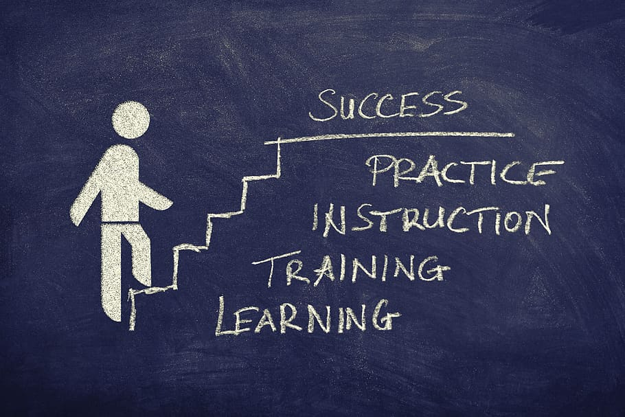

I used to think it was a silly waste of time to think about an objective or vision for my life. Who does that? It seems to touchy-feely, too Tony Robbins-ish.
But then, as I started learning how to change my life and my habits, I realized something: people avoid creating a vision for their lives because they believe the exercise is futile. Why make a vision when it’s impossible to accomplish those things anyway?
I’ve also noticed something over the past several years: the most interesting, accomplished people I know all have a vision for their lives. They seem to know what comes next, like they’ve seen the future.
On the other hand, people I meet or know who are stuck and have that hopeless look in their eyes, like they’re just passing time in life without joy or aspiration, those people don’t have a vision. In fact, many of them don’t even have long-term goals.
This was painfully clear at my recent high school reunion.